Buffer is very similar to Wobbler in many regards, but the main difference is its wheels. For this bot, you’ll attach two round “buffer” wheels to downward-facing motors that are rotating toward each other, so when you turn the bot on, it propels itself in the direction the scrubbers are spinning. Buffer looks a bit like a tiny street sweeper, but it moves differently from its larger cousin. However, it may actually clean your floor. Buffer is an easy little bot to build and fun to use.
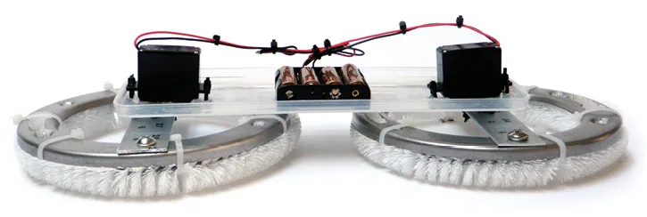
Tools and Supplies
- Two continuous-rotation servo motors with the controllers removed
- A 4 × AA battery holder
- Lid from a 12-inch plastic rectangular container
- Two dryer lint–catching brushes
- Two stainless-steel plumbing flange repair rings
- A 24-inch aluminum ruler
- Four ¼- inch nuts and bolts
- Two 4-40 × ¼-inch nuts and bolts
- Zip ties of assorted sizes
- Power drill
- Three drill bits: 1/8, 1/4, and 1/2 inch
- Hacksaw
- Wire stripper/cutting pliers
- Marker
Buffer Overview
First, you’ll modify the servos, just like you did with Wobbler (see also Chapter 4) or use one of the geared motor alternatives from Appendix A. Once this is completed, you’ll build the lint-brush buffer wheels. Then, you’ll attach the motors to the box lid and the buffing wheels to the motors, facedown toward the ground. Finally, you’ll wire together and power up the whole circuit.
Constructing Buffer
Step 1. Prepare the crossbars for Buffer’s brush wheels. You’ll use these crossbars to attach the servo horn to the wheel itself. Cut the ruler into two 7-inch sections, which should be the diameter of the stainless-steel plumbing flange repair rings.
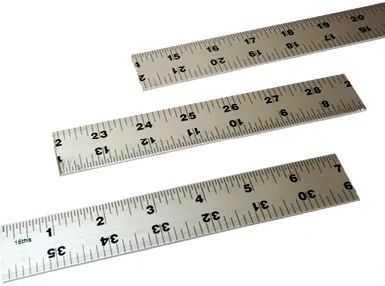
Step 2. You’re going to drill holes into the sections of ruler to attach those ruler sections to the repair ring and begin making Buffer’s wheels. First, position one ruler section across your repair ring, and with a marker pen, mark the ruler through the repair ring’s mounting holes at both ends of the ruler piece, as shown here. Try to get the mark as near to the center of the ruler’s width as possible. Repeat with the second section of the ruler.
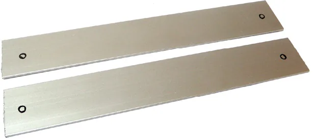
Step 3. Firmly clamp down the ruler sections, drill 1/8-inch pilot holes into the marks on them, and then widen the holes to ¼ inch.
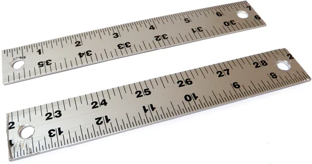
Step 4. Remove the screws attaching the servo horns to the servo motors and pull the horns off the motor boxes.
Step 5. Drill 1/8-inch holes through the ends of each servo horn.
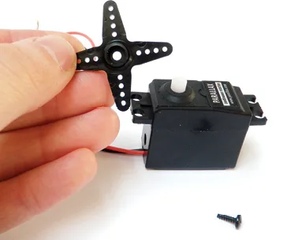
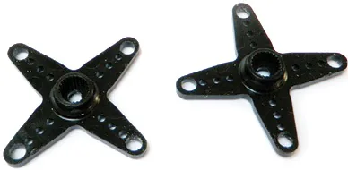
Step 6. Align a servo horn with the center of one ruler section. Two of the holes you previously drilled into the servo horn should hang over the edges of the ruler. Mark the ruler through the other two holes you previously drilled into the servo horn. Do the same for the other ruler section.
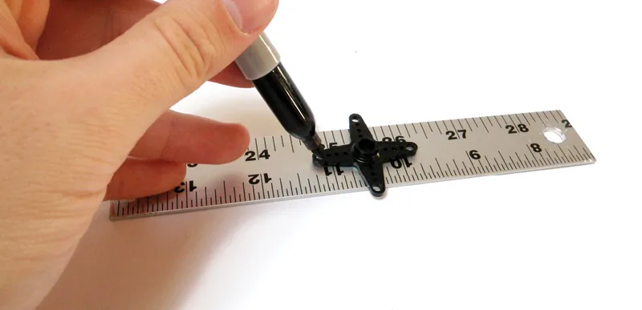
Step 7. Using a 1/8-inch drill bit, drill holes where you just marked each section of ruler.
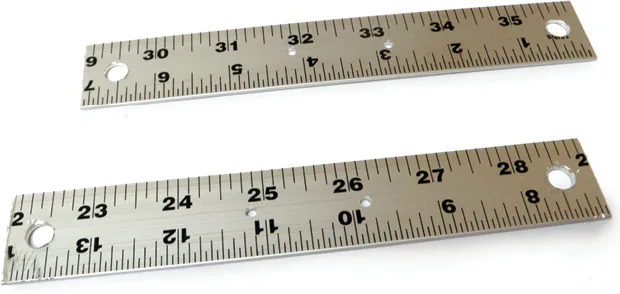
Step 8. Using your ¼-inch nuts and bolts, fasten each ruler section to a repair ring through the larger holes you drilled.
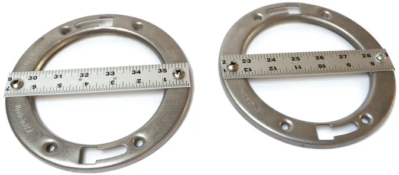
Step 9. Chop the handles off your lint-catching brushes.
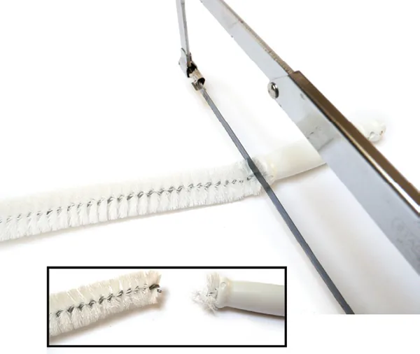
Step 10. To complete Buffer’s wheels, bend a lint brush around the bottom face of a repair ring so it forms a circle, zip-tying it in place as you go. Cut off excess zip-tie leads and any extra lint brush that remains. Repeat the process for the second lint brush and repair ring.
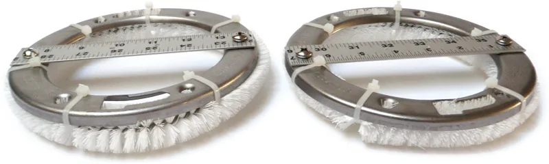
Step 11. Take the plastic box lid and mark it about ¾ inch in from each of the shorter edges of the lid. Try to get the marks in the center. Drill a ½-inch hole where you placed your two marks. If the plastic cracks or chips a little, it’s okay, so long as you can still zip-tie the motor in place.
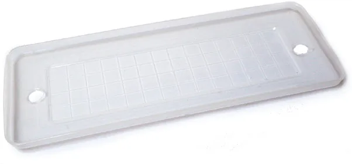
Step 12. Now you’ll add holes to mount the servo motors with zip ties. Position the servo motor shaft into the center of one of the holes you just drilled. Make a mark on the lid over each of the four servo-mounting holes. Repeat this process for the other hole you drilled. Finally, drill holes through these eight marks using a 1/8-inch drill bit.
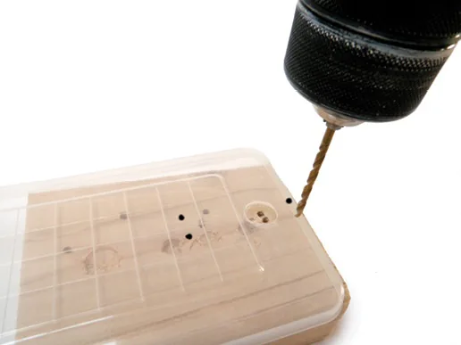
Step 13. Through these holes, zip-tie the motors to the box lid such that the lid’s lip points in the opposite direction of the motor shafts.
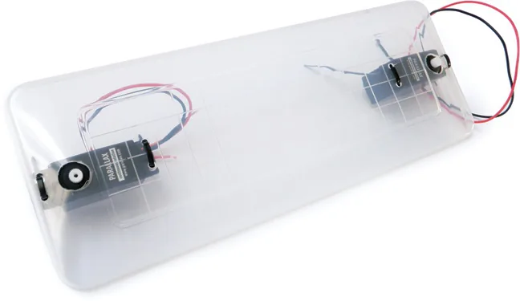
Step 14. Now position the battery holder on the center of the lid and mark the lid through the battery holder’s two mounting holes. Drill through these marks using a 1/8-inch drill bit.
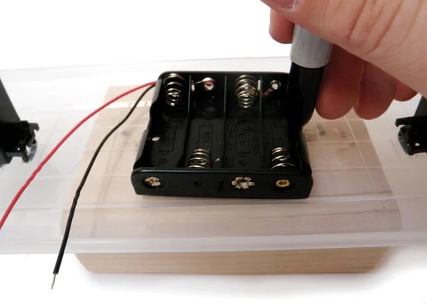
Step 15. Fasten the battery holder to the same side of the lid as your motors with the 4-40 × ¼-inch nuts and bolts.
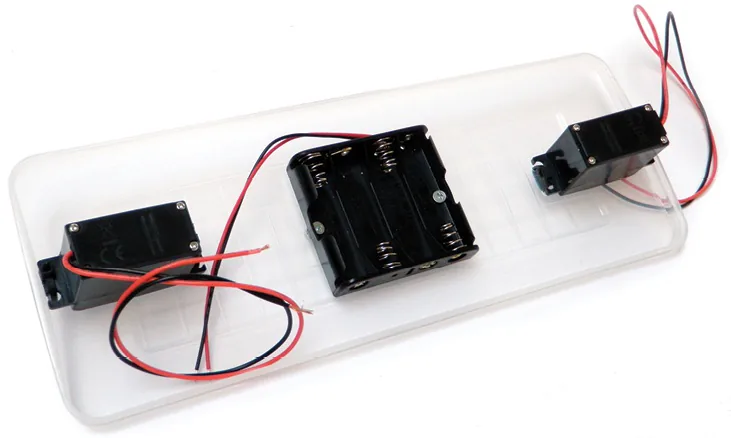
Step 16. Reattach the servo horns to the servos.
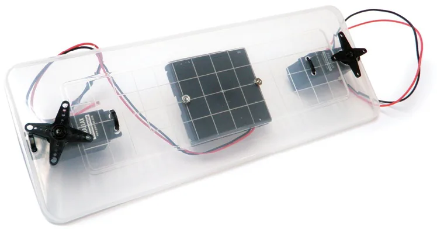
Step 17. Zip-tie the buffer wheels to the servo horns through the mounting holes you drilled earlier. For each wheel and servo-horn pair, pass a zip tie down through the servo horn and a hole in the ruler, then back up through one of the holes in the servo horn that sticks off the edge of the ruler, and then tie the zip tie. Repeat this process with the second zip tie, and make sure everything is firmly secured. Trim all excess zip-tie leads.
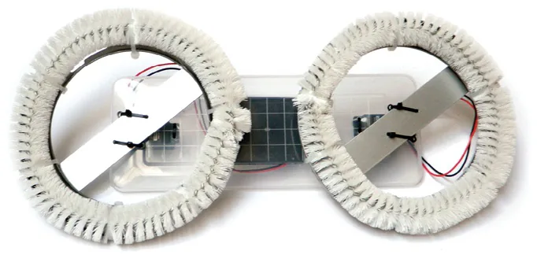
Step 18. Connect the red wire from one servo to the black wire on the other servo. Connect the remaining two black and red servo wires together. Attach one of these pairs to the red wire of the battery pack. Attach the other pair to the black wire. Zip-tie all of the wires neatly together, making certain that none of the exposed solder joints can touch each other and short the bot. Alternatively, insulate the connections with shrink tube.
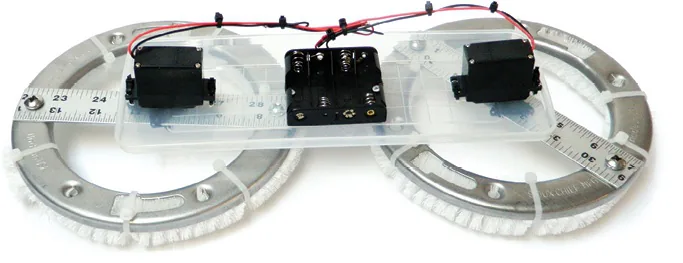
Step 19. Insert some batteries into the battery holder, put Buffer down, and watch it go!
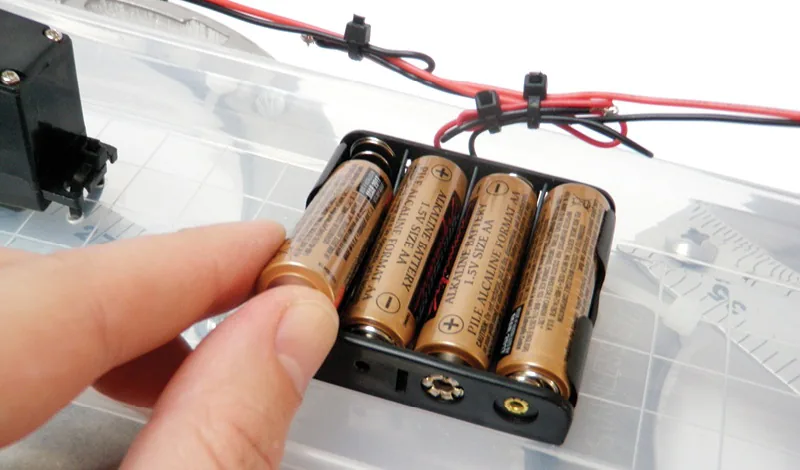